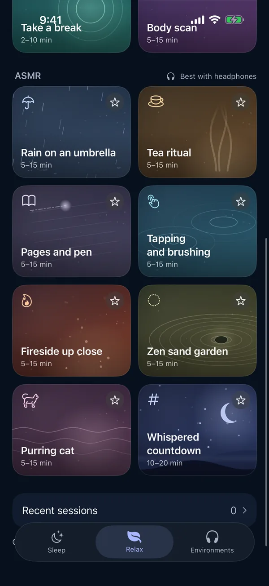

Whispered ASMR
ASMR is the calm, tingling feeling some people get from close, quiet sounds: a whisper, gentle tapping, a brush moving from ear to ear, pages turning. People listen to it to unwind and to fall asleep.
Moonrain is a free sleep-sound app for iPhone, iPad and Apple silicon Macs. It has eight whispered ASMR experiences in 3D sound, and it works completely offline: no account, no ads, no subscription and no tracking.
In the app · best with headphones
- Rain on an umbrellaRain patters on the fabric just above you
- Tea ritualA simmering kettle, slow pours, soft porcelain
- Pages and penTurning pages and a pen writing slowly, close by
- Tapping and brushingGentle taps and a brush moving ear to ear
- Fireside up closeWood crackling near you, a blanket, warm embers
- Zen sand gardenSand raked in slow arcs, stones, trickling water
- Purring catA sleepy cat purring on your lap
- Whispered countdownCount slow breaths down from fifty over soft rain
Each one runs for 5, 10 or 15 minutes; the whispered countdown runs for 10, 15 or 20. You'll find them under ASMR in the Relax tab.

How it sounds
3D sound
The sounds are placed around you: rain just above, taps on one side and then the other. Wear headphones.
Whispered guidance
A few quiet lines guide each experience. Turn off Spoken guidance to hear the sounds alone.
Your levels
Set the voice and the background sounds separately, and choose whether to end on a gentle bell.
Questions
Is the ASMR free?
Yes. All eight ASMR experiences are included. Moonrain has no ads, no subscription and no in-app purchases.
Does it work offline?
Yes. The sounds and the whispered guidance are built into the app and play offline, including in airplane mode.
Do I need headphones?
The experiences are made for headphones. The sounds are placed around you in 3D, and headphones are what make that work.
Can I turn the whispering off?
Yes. Turn off Spoken guidance and the sounds play on their own. The voice and the background sounds also have separate volume levels.